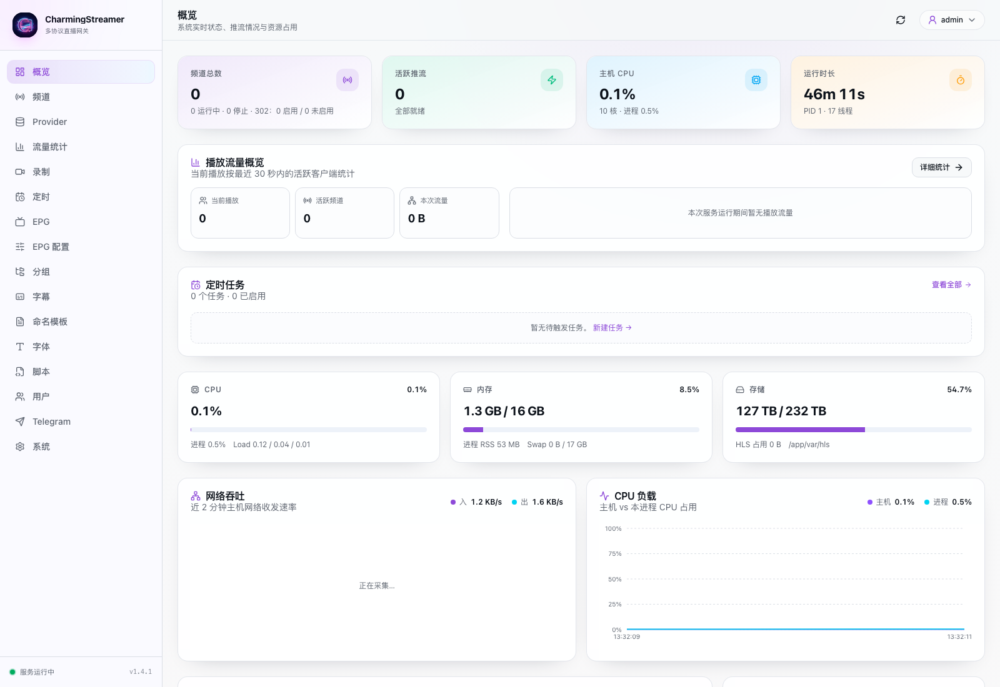
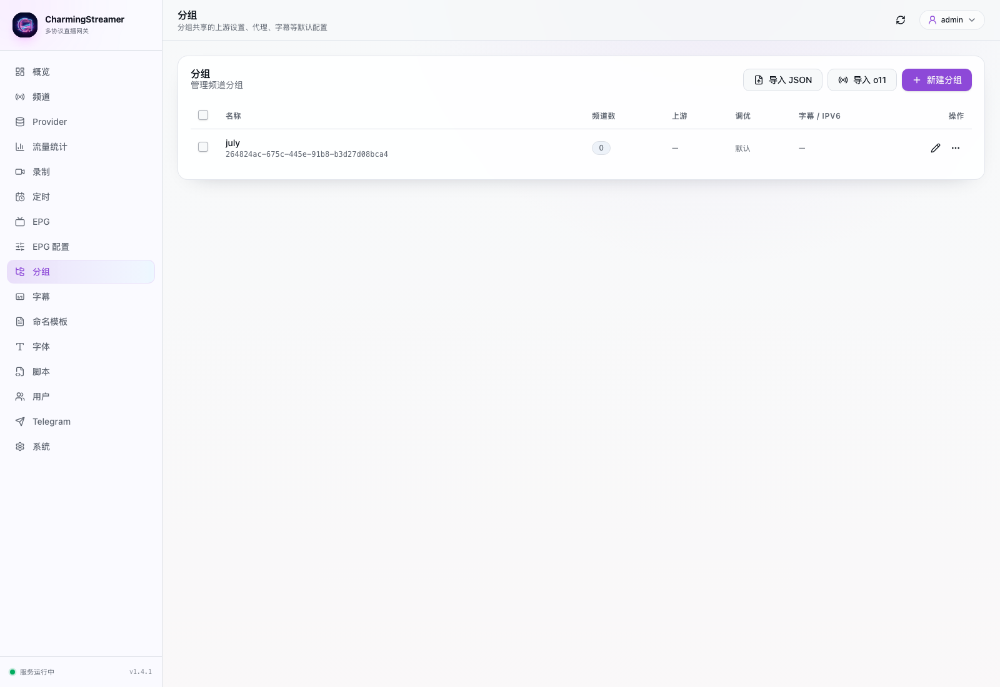
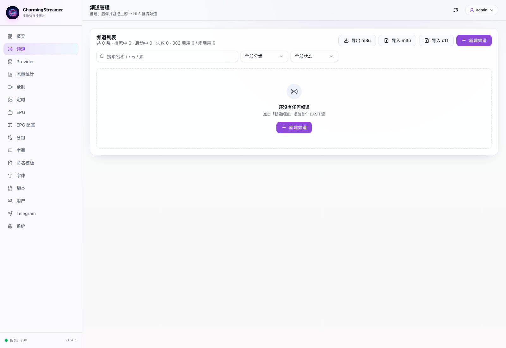
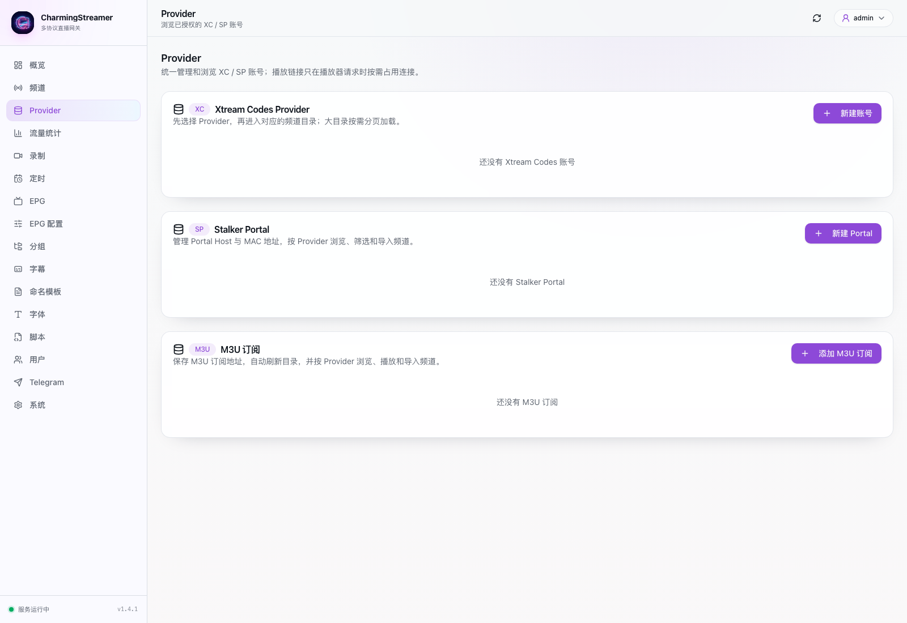
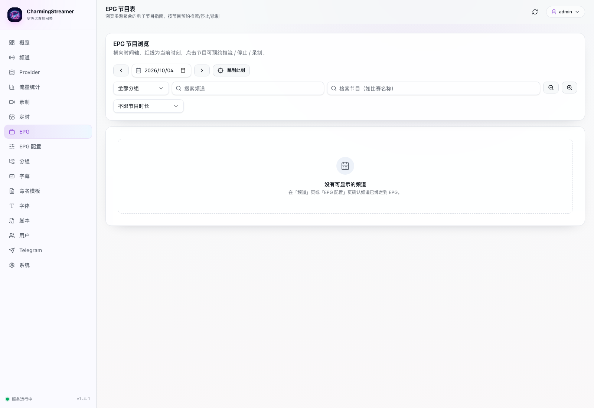
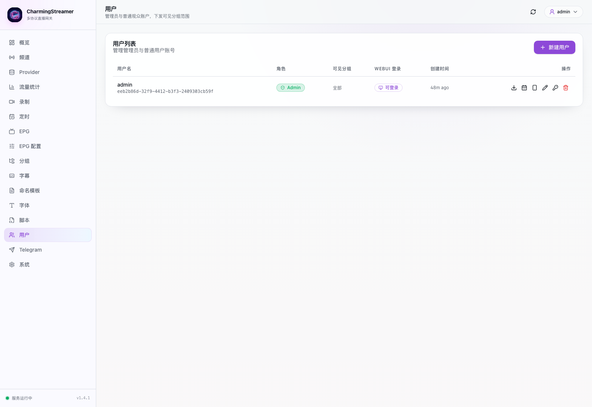
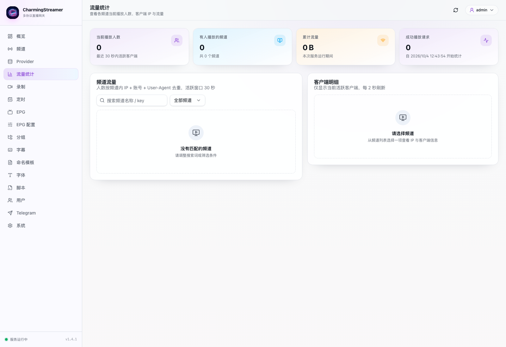
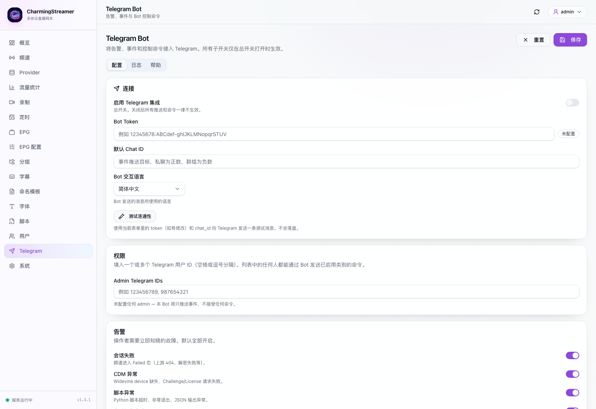
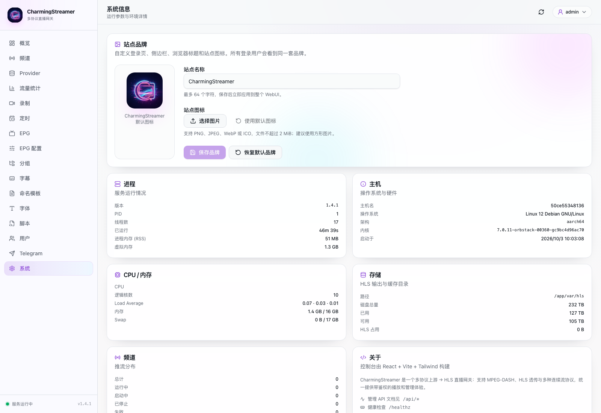

多协议直播网关 · 用户手册
CharmingStreamer 把 MPEG-DASH、HLS、TS、FLV 与 RTMP 上游统一转封装成 HLS。 它提供频道管理、EPG 节目单、录制、定时启停、字幕处理与 Telegram 告警。 管理界面是一个 Web 控制台，播放内容通过独立的令牌地址分发。
文档对应版本 v1.4.1·界面语言 简体中文
正文出现的英文缩写在此对照。可随时回查。
| 术语 | 全称 | 含义 |
|---|---|---|
| HLS | HTTP Live Streaming | 基于 HTTP 的直播流格式，由一个不断更新的 m3u8 播放列表加若干分片组成。本系统统一输出的格式 |
| DASH | Dynamic Adaptive Streaming over HTTP | 另一种直播流格式，扩展名 .mpd。可自适应码率 |
| MPD | Media Presentation Description | DASH 的清单文件。描述有哪些轨道、分片地址与加密信息 |
| m3u8 | — | HLS 的播放列表文件。记录最近若干分片的地址 |
| TS | MPEG Transport Stream | 传统的单一流封装格式。录制为 TS 时单文件可含多音轨 |
| 连续流 | Continuous stream | 没有清单的单一字节流，如 TS、FLV、AAC、MP3 |
| DRM | Digital Rights Management | 数字版权保护。内容加密，需要密钥才能播放 |
| ClearKey | — | 最简单的 DRM。密钥以 KID:KEY 明文形式给出，可直接填写 |
| KID | Key ID | 密钥标识。16 字节，写在 MPD 的 default_KID 里。公开可见 |
| KEY | Content Key | 解密密钥。16 字节。通常不公开，需向授权服务器换取 |
| PSSH | Protected System Specific Header | 加密初始化信息。Key 脚本据此向 CDM 请求 challenge |
| CDM | Content Decryption Module | 解密模块。执行 DRM 协议握手并产出密钥。内置支持 Widevine 与 PlayReady |
| Widevine | — | Google 的 DRM。Android、Chromecast、电视盒子常用 |
| PlayReady | — | 微软的 DRM。Windows 生态与部分电视平台使用 |
| license | — | 授权服务器返回的许可证。CDM 用它换出 KEY |
| challenge | — | CDM 为换取 license 而生成的随机数据。提交给授权服务器 |
| EPG | Electronic Program Guide | 电子节目表。XMLTV 格式，含频道列表与节目时间表 |
| XMLTV | — | EPG 的标准数据格式。扩展名 .xml 或 .xml.gz |
| tvg-id | — | M3U 中用于关联 EPG 的频道标识。绑定 EPG 后播放器据此匹配 |
| tvg-logo | — | M3U 中频道台标的图片地址 |
| CDN | Content Delivery Network | 内容分发网络。源站方的加速节点，分片实际从 CDN 节点取 |
| 反代 / 反向代理 | Reverse proxy | 替客户端访问上游并转发内容。本系统的一种下发模式 |
| 302 | HTTP 302 Found | 重定向。服务端返回 302 让客户端自行去取。零开销的一种下发模式 |
| 直通 | Passthrough | 跳过 HLS 切片，直接把上游字节转发给客户端 |
| ffmpeg | — | 音视频处理工具。本系统录制 MKV 格式时调用它 |
| PGS | Presentation Graphic Stream | 图形字幕。烧录或内嵌到视频流中，不依赖客户端字体 |
| WebVTT | — | 文本字幕。网页视频标准，可被翻译。某些播放器选它会丢声音 |
| OCR | Optical Character Recognition | 文字识别。从图形字幕中识别出文本，生成 WebVTT 副本 |
| hardlink | — | 硬链接。同一文件系统的零拷贝引用。录制暂存用它省磁盘 |
| M3U | — | 频道列表文件。播放器读取它得到全部频道 |
| 令牌 / token | — | 不透明字符串。替代账号密码嵌入地址，可单独吊销 |
| Xtream Codes | — | 一类上游账号体系。用服务器地址加用户名密码取频道目录 |
| Stalker Portal | — | 一类上游账号体系。用 MAC 地址握手换取短期令牌 |
| tvg 源 | — | 本手册中指 Xtream、Stalker、M3U 三类上游账号 |
这一章说明 CharmingStreamer 做什么，以及它把上游转换成什么。
CharmingStreamer 是一个上游直播网关。系统接收一条上游直播流，转封装成 HLS 播放列表， 再通过带鉴权的地址分发给播放器。系统在转封装过程中完成解密、字幕处理、多音轨封装与 EPG 绑定。
系统由两部分组成：

系统按上游是否带清单把源分成两类。两类的处理方式不同。
| 上游类型 | 说明 | 系统行为 |
|---|---|---|
| MPEG-DASH | 清单后缀 .mpd | 解析清单，解密分片，重新封装为 fMP4 并发布 HLS |
| HLS | 清单后缀 .m3u8 | 按请求反代并改写清单，或直接透传上游分片 |
| 连续流 | TS、FLV、AAC、MP3 等单一流 | 按字节流接入，切成 HLS 分片发布。此类源不走 DRM |
| RTMP 推流 | OBS、ffmpeg 主动推入 | 接收推流并转成 HLS。无需填写源地址 |
加密流需要解密密钥。密钥有三种来源：
KID:KEY。格式详见第 5 章。下发模式决定系统如何把内容交给客户端。模式在频道或分组上设置。三个模式的取舍如下表。
| 模式 | 系统行为 | 占用 | 支持录制 | 适用场景 |
|---|---|---|---|---|
| 转封装推流 | 系统主动拉流并切片，客户端读本机文件 | 占 CPU、带宽与磁盘 | 支持 | 加密流、需要录制、需要统一下发格式 |
| HLS 反向代理 | 按客户端请求反代上游清单并改写 | 占带宽，不占磁盘 | 不支持 | 公网 HLS 源、源站已有 CDN |
| 302 重定向 | 返回 302，把上游地址交给客户端 | 几乎为零 | 不支持 | 把上游地址隐藏在自有域名之后 |
这一章说明如何把系统装到一台服务器上。
| 项目 | 要求 |
|---|---|
| 运行时 | Docker 与 Docker Compose |
| 镜像 | charmingcheung000/mpd-hls:latest |
| 管理端口 | 9100（Web 控制台与播放服务） |
| 推流端口 | 1935（RTMP，仅推流模式使用） |
| 磁盘 | 按 HLS 缓存与录制体积预留。缓存目录可与录制目录分开 |
在服务器上建立一个目录，并在该目录内保存 docker-compose.yml。
# 端口 9100 提供管理界面与播放服务。端口 1935 接收 RTMP 推流。 # 变量 ./var 是数据目录。系统把数据库、HLS 缓存、录制、脚本与 EPG 全部写入此目录。 networks: ipv6net: driver: bridge enable_ipv6: true services: mpd-hls: image: charmingcheung000/mpd-hls:latest container_name: mpd-hls networks: - ipv6net ports: - "9100:9100" - "1935:1935" volumes: - ./var:/app/var extra_hosts: - "host.docker.internal:host-gateway" restart: unless-stopped
ipv6net 启用双栈网络。
很多直播源只提供 IPv6 地址。启用后容器可同时访问 IPv4 与 IPv6 上游。
执行以下命令启动容器。
$ docker compose up -d
容器首次启动会初始化数据库，并生成管理员账号。等待几秒后检查状态。
$ docker compose ps $ docker compose logs -f --tail=50
容器首次启动时生成一组随机密码，并写入数据目录。执行以下命令读取账号。
$ docker exec mpd-hls cat /app/var/admin_initial_credentials.txt username: admin password: <随机生成的密码>
记录密码。控制台内可以随时修改密码，详见第 16 章。
系统把全部可变数据写入挂载目录 ./var。目录结构如下。
| 路径 | 内容 | 可否删除 |
|---|---|---|
var/mpd-hls.db | SQLite 主数据库，保存全部配置 | 不可。删除会丢失所有配置 |
var/hls/ | HLS 切片缓存 | 可。系统按缓存上限自动清理 |
var/recordings/ | 录制暂存与成品文件 | 不可。成品文件是用户资产 |
var/epg/ | EPG 源快照与缓存 | 可。删除后重新抓取 |
var/scripts/ | 用户上传的 Python 脚本 | 不可。频道配置引用此目录 |
var/cdm/ | Widevine 与 PlayReady 设备文件 | 不可 |
var/admin_initial_credentials.txt | 初始账号密码 | 修改密码后可删除 |
需要解密 DRM 流时，把设备文件放入 var/cdm/ 目录。系统支持以下文件。
| DRM 类型 | 文件名 | 说明 |
|---|---|---|
| Widevine | device_client_id_blobdevice_private_key | 成对放置。两者都在时优先使用 blob |
| Widevine | device.wvd | pywidevine 格式。blob 不完整时回退到此文件 |
| PlayReady | device.prd | playready-rs 格式 |
不使用 DRM 时跳过本步骤。把 var/cdm/ 目录留空即可。
执行健康检查。返回 ok 表示服务正常。
$ curl -s http://服务器IP:9100/healthz ok
在浏览器打开 http://服务器IP:9100/，进入下一步。
ok。浏览器显示登录页。
这一章说明如何进入控制台并修改初始密码。
在浏览器打开 http://服务器IP:9100/。输入初始账号与密码，单击「登录控制台」。
控制台会话有有效期。会话失效后回到登录页，重新输入凭据即可。
按以下步骤修改管理员密码。
admin 行，单击操作列的重置密码按钮。密码修改后立即生效。当前会话保持登录状态。
控制台按功能划分导航。导航分三段。
| 分组 | 菜单项 | 用途 |
|---|---|---|
| 内容 | 概览 | 系统状态、推流情况、资源占用 |
| 频道 | 创建、启停、监控频道 | |
| Provider | 管理 Xtream、Stalker 与 M3U 账号 | |
| 流量统计 | 播放人数、客户端 IP 与流量 | |
| 录制 | 录制任务与成品文件 | |
| 配置 | 定时 | 定时启停频道的计划任务 |
| EPG | 节目表浏览与节目预约 | |
| EPG 配置 | EPG 源、频道绑定与关键字规则 | |
| 分组 | 频道分组与共享配置 | |
| 字幕 | PGS 渲染样式与 OCR 开关 | |
| 命名模板 | 录制文件命名模板 | |
| 系统 | 字体 | 上传字幕字体 |
| 脚本 | 上传与编辑 Python 脚本 | |
| 用户 | 管理员与观众账号 | |
| Telegram | 告警、事件与 Bot 命令 |
单击右上角的账号菜单可切换界面语言与深浅主题。设置保存在浏览器本地。
这一章说明五个贯穿全部页面的概念。理解这五项后，后续章节只做字段对照。
分组是一组频道的容器。分组不只是分类，它同时承载一组共享配置。
组内频道的以下设置留空时继承分组值：
新建频道前必须先建分组。频道的分组字段为必填项。
频道是一条推流任务。每个频道有一个生命周期模式。模式决定频道何时拉流、何时停止。
| 模式 | 拉流时机 | 停止时机 | 适用条件 |
|---|---|---|---|
| 常驻 | 手动启动后持续推流 | 手动停止 | 任何模式 |
| 按需 | 收到首个播放请求后拉流 | 无人观看后自动停止 | 转封装推流与 HLS 反代 |
| 302 启用 | 不拉流，直接返回 302 | 不适用 | 仅 302 重定向模式 |
频道列表的「按需」列可切换常驻与按需。切换会改变频道的拉流时机。
每个频道分配一条播放地址。地址中包含一段不透明令牌，替代上游地址与账号密码。
/l/<令牌>/index.m3u8——转封装推流与 HLS 反代模式的播放入口/raw/<stream_key>——直通模式直接转发上游字节，不切片/sub/<令牌>/playlist.m3u——用户维度的 M3U 订阅/sub/<令牌>/epg.xml.gz——用户维度的 gzipped XMLTV令牌是设备访问凭证。同一频道对不同用户生成不同令牌。详见第 16 章。
?u=&p= 形式。
下发模式决定一批频道字段是否生效。对照如下。
| 功能 | 转封装推流 | HLS 反向代理 | 302 重定向 |
|---|---|---|---|
| 手动启动 / 停止 | 支持 | 支持 | 不支持 |
| 自动启动 | 支持 | 支持 | 不支持 |
| 按需启动 | 支持 | 支持 | 不支持 |
| 录制 | 支持 | 不支持 | 不支持 |
| 轨道选择 | 支持 | 不支持 | 不支持 |
| 字幕渲染与 OCR | 支持 | 不支持 | 不支持 |
| DRM 解密 | 支持 | 源自身解密 | 源自身解密 |
| 分片磁盘缓存 | 支持 | 支持 | 不适用 |
| 原始流直通 | 仅连续流 | 不支持 | 不支持 |
控制台支持自定义站点名称与图标。品牌设置影响登录页、侧边栏、浏览器标题与站点图标。 所有登录用户看到同一套品牌。详见第 17 章。
这一章说明 License Key 字段填什么、从哪里取、以及填错时的现象。
直播流的分片可能经过加密。没有密钥就无法把分片还原成可播放的内容。 License Key 字段存放解密所需的密钥信息。
该字段不是必填项。它的作用随上游类型而变。
| 上游情况 | 是否填写 | 原因 |
|---|---|---|
| 源不加密（公开 HLS、ClearKey 已解的源） | 留空 | 分片本身可读。系统直接封装 |
| 连续流（TS、FLV、AAC、MP3） | 留空 | 字节流路径不走 DRM。界面显示「连续流不适用」 |
| 加密流，且已拿到 KID 与 KEY | 填写 KID:KEY | 系统用密钥解密分片 |
| 加密流，只有 KID，KEY 需要向授权服务器换取 | 挂 Key 脚本 | 没有现成密钥可填。脚本负责换取 |
| 加密流，使用 Widevine 或 PlayReady | 挂 Key 脚本 | 密钥由 DRM 协议协商产生，无法预先填写 |
按下表选择动作。前三行覆盖绝大多数情况。
| 你的情况 | 动作 | 填什么 |
|---|---|---|
| 不确定源是否加密 | 先留空启动 | 能播则无需处理。不能播时看 5.6 |
| 源提供方给了 ClearKey | 直接填写 | 提供方给出的 KID:KEY |
| 源是 Widevine / PlayReady 商业流 | 挂 Key 脚本 | 字段留空。见第 15 章 |
| 源需要登录才能取 MPD | 挂 Source 脚本 | 字段留空 |
| 已挂 Key 脚本 | 字段留空 | 脚本在运行时生成密钥 |
License Key 是多行文本。每行一条。系统按下表识别格式。
| 格式 | 示例 | 适用 |
|---|---|---|
| KID 与 KEY | 0123456789abcdef0123456789abcdef:fedcba9876543210fedcba9876543210 | ClearKey。最常用 |
| License URL | https://license.example/keys | 源提供方给出取密钥地址 |
| 留空 | （不填） | 不加密，或由脚本生成 |
| JWK Set JSON | {"keys":[{"kid":"...","k":"..."}]} | 仅 M3U 导入。见下方说明 |
KID 与 KEY 各为 16 字节，各写 32 个十六进制字符，中间用冒号分隔。
# 冒号前是 KID，冒号后是 KEY。两者各 32 个十六进制字符
0123456789abcdef0123456789abcdef:fedcba9876543210fedcba9876543210
以下写法都有效。系统保存时统一规范为小写、无连字符的形式。
| 写法 | 示例 | 结果 |
|---|---|---|
| 标准 | 0123456789abcdef…:fedcba98… | 接受 |
| 带连字符 | 01234567-89ab-cdef-0123-456789abcdef:fedcba98-… | 接受。连字符被去除 |
| 大写 | 0123456789ABCDEF… | 接受。转为小写 |
以下写法会被后端拒绝，保存时直接返回错误。
| 写法 | 示例 | 错误信息 |
|---|---|---|
| 长度不足 | aaaa:bbbb | KID must be 16 bytes hex |
| 带 0x 前缀 | 0x0123456789abcdef… | license key contains non-hex characters |
| 含空格 | 0123456789abcdef… : fedcba98… | license key contains non-hex characters |
| 非十六进制 | zzzz:wwww | license key contains non-hex characters |
| 缺冒号 | 0123456789abcdef0123456789abcdef | license key contains non-hex characters |
| 多个冒号 | aaa:bbb:ccc | 拒绝 |
视频轨与音频轨可能使用不同的密钥。此时按行填写多条。系统按 KID 自动匹配对应轨道，匹配不到时逐条尝试解密。
# 第一条：视频轨 aaaa…:bbbb… # 第二条：音频轨，与视频不同 cccc…:dddd… # 第三条也可以是 license URL，与上面两条共存 https://license.example/keys
以 # 开头的行作为注释。保存时注释行被剥离，不参与解密。
M3U 导入时，前端接受 JWK Set JSON 格式，取 keys 数组的第一项，转成 KID:KEY 后再提交。
KID:KEY 形式。
KID 是内容密钥的标识，写在 MPD 里。KEY 是解密密钥，通常不公开。
KID 出现在 MPD 的 default_KID 属性中。在服务器上直接查看：
$ curl -s 源地址 | grep -o 'default_KID="[^"]*"' | head default_KID="0123456789abcdef0123456789abcdef"
输出中引号内的 32 个字符即为 KID。去掉连字符后即为可填写的形式。
| 来源 | KID 可见 | KEY 可见 | 做法 |
|---|---|---|---|
| ClearKey | MPD 公开 | 通常随源一并提供 | 直接填入 |
| Widevine | MPD 公开 | 否。需与授权服务器握手 | Key 脚本 + 内置 CDM |
| PlayReady | MPD 公开 | 否 | Key 脚本 + 内置 CDM |
Key 脚本通过内置 CDM 完成解密协议握手。需要先把设备文件放入数据目录。
var/cdm/ 目录。| DRM | 文件名 | 说明 |
|---|---|---|
| Widevine | device_client_id_blobdevice_private_key | 成对放置 |
| Widevine | device.wvd | blob 不完整时使用 |
| PlayReady | device.prd | playready-rs 格式 |
文件缺失时，频道状态显示「失败」，错误分类为「CDM 错误」。详见第 15 章。
License Key 相关的错误多数不发生在保存时，而发生在推流时。按下表定位。
| 现象 | 原因 | 处理 |
|---|---|---|
保存时提示 KID must be 16 bytes hex | KID 长度不对 | 检查位数是否为 32 个十六进制字符 |
| 保存时提示含非十六进制字符 | 含空格、0x 前缀或非十六进制符号 | 删去空格与前缀。只保留 0-9 与 a-f |
| 状态「失败」，分类为 Key 错误（硬编码不可恢复） | KID 或 KEY 与源不匹配 | 从 MPD 重新读取 KID。确认 KEY 来源正确 |
| 状态「失败」，分类为 Key 过期（将重新获取） | 动态密钥到期 | 系统重跑 Key 脚本。持续失败时检查上游授权 |
| 状态「运行中」，播放器转圈或花屏 | 密钥能解密但内容不对 | 核对 KID 是否取自该源的 MPD。尝试只保留一条密钥 |
| 状态「失败」，分类为 CDM 错误 | 设备文件缺失或无效 | 检查 var/cdm/。详见 5.5 |
| 状态「失败」，分类为 脚本错误 | Key 脚本异常 | 查看频道日志中的 script stderr 行 |
这一章用六步把一个频道送进播放器。全程不需要脚本与自定义配置。
分组是频道的必填归属，也是共享配置的载体。
自建源。0。

先建一个最简单的 ClearKey 频道，验证链路通畅。
CCTV-1。.mpd 或 .m3u8 后缀。KID:KEY。公开流留空。不确定时先留空试播。格式详见第 5 章。自建源。状态变化过程为：已停止 → 启动中 → 运行中。启动过程包含解析清单、拉取分片与解密。
频道运行后分配播放地址。执行以下操作读取：
地址格式如下。
http://服务器IP:9100/l/<令牌>/index.m3u8
把地址粘进播放器。VLC、mpv、ffplay 与 ExoPlayer 均可直接播放。
.m3u8 后缀的地址。
iOS 与 Safari 原生播放器会失效。详见第 7 章。
不要把管理员账号交给播放器。为观看者创建独立账号。
自建源。订阅地址包含完整频道列表。把它交给播放器即可，无需逐条复制播放地址。
订阅地址格式如下。
http://服务器IP:9100/sub/<令牌>/playlist.m3u
配套的 EPG 地址格式如下。
http://服务器IP:9100/sub/<令牌>/epg.xml.gz
把订阅地址粘进播放器的订阅设置。多数播放器会自动识别订阅内的 EPG 地址。

这一章说明频道的全部配置项。频道是系统的核心对象。
频道页列出全部频道。表头统计各类状态的数量。
| 列 | 说明 |
|---|---|
| 名称 | 频道名。用于 M3U 显示与 EPG 匹配 |
| 状态 | 运行中、启动中、已停止、失败、302 已启用、302 未启用 |
| 健康 | 正常、缓慢、曾缓慢。反映分片生成是否跟得上播放 |
| 按需 | 按需或常驻。单击单元格可切换 |
| 分组 | 所属分组 |
| 分类 | M3U 的 group-title。留空时回退到分组名 |
| 启动时间 | 本次推流的开始时刻 |
| 操作 | 推流、探测、轨道、录制、定时、编辑、更多 |
| 状态 | 含义 | 后续动作 |
|---|---|---|
| 已停止 | 没有推流 | 可手动启动 |
| 启动中 | 正在解析清单与拉取首轮分片 | 等待或停止 |
| 运行中 | 正常推流 | 可停止 |
| 重试中 | 失败后等待重试。显示重试次数与倒计时 | 等待或停止 |
| 失败 | 重试耗尽或不可重试。状态栏显示错误分类 | 查看日志后重启 |
失败状态下，状态栏给出错误分类。按分类定位问题。
| 分类 | 典型原因 | 处理 |
|---|---|---|
| 网络/上游错误 | 连接超时、HTTP 5xx | 检查网络与代理。更换上游 |
| Key 过期（将重新获取） | 动态密钥到期 | 系统自动重跑 Key 脚本。观察是否恢复 |
| Key 错误（硬编码不可恢复） | 填写的 KID:KEY 与源不匹配 | 更换正确密钥，或改用脚本获取 |
| 脚本错误 | 脚本超时、退出码非零、输出异常 | 查看日志中的 script stderr 行 |
| CDM 错误 | 设备文件缺失、Challenge 或 License 失败 | 检查 var/cdm/ 文件 |
| 媒体格式错误 | 分片格式不受支持 | 确认源类型受支持 |
| 鉴权失败 | User-Agent 或请求头不匹配 | 补齐 UA 与请求头 |
| 配置错误 | 字段缺失或格式错误 | 检查频道配置 |
| 字段 | 必填 | 说明 |
|---|---|---|
| 频道名称 | 否 | 留空时从源 URL 推导 |
| 分类 | 否 | 仅作为 M3U 的 group-title。留空回退到分组名 |
| Logo URL | 否 | 写入 M3U 的 tvg-logo |
| 源地址 | 是 | 拉流模式填上游清单地址。推流模式留空 |
| License Key | 否 | 每行一条 KID:KEY，或 http(s):// 开头的 license URL。格式详见第 5 章 |
| 分组 | 是 | 必选。决定继承哪些共享配置 |
| 字幕配置 | 否 | 留空继承分组。分组也留空时用系统默认 |
| 录制格式 | 否 | TS 或 MKV。留空使用默认 TS |
.ts 段。
TS 使用内置合成，单文件容纳多音轨。MKV 使用 ffmpeg 合成，需要镜像内存在 ffmpeg。
「来源方式」决定流的方向。两个选项对应两类接入。
| 选项 | 含义 | 适用 |
|---|---|---|
| 拉流（我们去取） | 系统主动连接上游地址拉取 | DASH、HLS、TS、RTMP 等绝大多数源 |
| 推流（编码器推给我们） | OBS、ffmpeg 等编码器推流到系统 RTMP 端口 | 自建直播源、摄像头 |
选择推流模式后，系统显示推流地址与串流密钥。地址在创建频道后可在编辑对话框查看。
| OBS 设置项 | 填写内容 |
|---|---|
| 服务器 | rtmp://服务器IP:1935/live |
| 串流密钥 | 频道的串流密钥 |
「断开保留时长」控制推流中断后的会话保留秒数。编码器在此期间重连可无缝续播，观众不掉线。设为 0 表示断开即停止。
| 字段 | 说明 |
|---|---|
| 自动启动 | 服务启动时自动推流该频道 |
| 按需启动 | 有播放请求时才拉流。无人观看后自动停止 |
| 启用 302 下发 | 允许客户端获取重定向。仅 302 模式可用 |
以下字段控制系统访问上游的方式。留空时继承分组值。
| 字段 | 格式 | 说明 |
|---|---|---|
| 上游代理 URL | http://、https://、socks5:// | 可含账号密码 |
| User-Agent | 字符串 | 覆盖默认 UA |
| 自定义请求头 | 每行一条 Key: Value | 逐条追加到上游请求 |
编辑对话框留空某字段会清除该频道的对应配置，配置回退到分组级或系统默认值。
系统通过「探测」读取上游清单，列出可用轨道。探测结果决定轨道面板中的选项。
| 区块 | 选项 | 说明 |
|---|---|---|
| 视频 | 单选，含「最高质量（自动）」 | 「自动」始终跟随当前最高分辨率 |
| 音频 | 多选 | 按编号顺序发布。排第一的轨道标记为默认 |
| 字幕 | 多选 | 可输出为 PGS、WebVTT 或两者 |
| 字幕配置 | 下拉 | 频道级配置，覆盖分组级 |
| 多音轨输出方式 | 开关 | 开启后音轨混入视频 TS。面向 TVHeadend 等不支持 HLS 多音轨的下游 |
| 短分片聚合 | 开关 | 上游分片短于约 4 秒时合并为约 8 秒。仅对 DASH 源生效 |
「HLS 代理设置」区块配置分片缓存行为。留空项继承分组。
| 字段 | 默认值 | 说明 |
|---|---|---|
| 启用分片磁盘缓存 | — | 开关 |
| 每频道缓存上限 (MB) | — | 超限后回收最旧分片 |
| 分片保留时间 (分钟) | — | 定时回收 |
| Manifest 短缓存 (毫秒) | — | 抑制频繁拉取上游清单 |
| 并发切片获取数 | 4 | 单频道同时获取的非密钥 HLS 资源上限 |
| 目标分片时长 (秒) | 8 | 连续流合并上游分片的目标时长 |
| 重定向多解析次数 | 1 | 仅 302 模式。仅 DASH 与 HLS 清单源生效 |
1。
映射表用于改写下游请求。每行写 下游名称=上游名称，追加 ;children 表示继续带到改写后的子资源。
u 与 p 为本地鉴权保留。上游需要同名参数时使用别名映射「流量伪装」改变 HTTP 出口的外观，用于对抗 CDN 的 Cloudflare 校验。磁盘文件与内部管线保持不变。
| 字段 | 作用 |
|---|---|
| 分片后缀 | 分片的假后缀，不带点。填 jpg 则分片以 12.jpg 提供 |
| 分片 Content-Type | 分片响应的 Content-Type。留空时为 application/octet-stream |
| 播放列表 Content-Type | 设置后播放列表以去后缀形式提供，地址形如 .../index |
.m3u8 后缀识别。
同时避免使用 ts、m4s、mp4、aac、vtt 作为假后缀。
确认客户端使用容忍型播放器后再开启：ExoPlayer、VLC、mpv、ffmpeg。
勾选表头的复选框全选当前页。批量操作栏提供以下操作。
| 操作 | 说明 |
|---|---|
| 批量编辑 | 逐字段勾选启用，只提交启用的字段。留空即清除该字段 |
| 推流 / 停止 | 批量下发启停指令 |
| 探测 | 批量触发源探测 |
| 开按需 / 关按需 | 切换生命周期。推流中的频道被跳过 |
| 启用 302 / 停用 302 | 切换 302 下发开关 |
| 设置分类 | 统一设置 M3U 分类。留空即清除 |
| 排序 | 把选中频道作为连续块移动到指定位置。含移动后预览 |
| 批量删除 | 删除选中频道及其 HLS 缓存。不可恢复 |
批量编辑的「脚本」字段会整张覆盖所选频道的脚本列表。留空即清空所有脚本。
| 跳过原因 | 处理 |
|---|---|
| 缺少 URL | 该行无地址。修正源文件 |
| 不支持的源类型 | 地址后缀不受支持 |
| 密钥格式不合法 | #KODIPROP 声明的 ClearKey 格式错误 |
导入支持解析 M3U 中的 #KODIPROP 声明，包括 ClearKey 密钥与 User-Agent。
「导入 o11」读取 o11 工具导出的 .cfg 配置文件。系统自动创建分组并导入全部频道。
导入同时带入以下内容：
频道行单击日志按钮打开频道日志面板。日志保存在内存环形缓冲区，容量 500 条，记录 INFO 及以上级别。
面板提供按级别筛选、按关键字搜索与自动滚动。状态变化时的关键事件如下。
| 日志内容 | 含义 |
|---|---|
starting persistent MPD live session | 开始建立直播会话 |
refresh attempt failed, retrying with a fresh MPD session | 清单刷新失败，重建会话 |
bootstrap refresh failed, retrying in place | 首轮初始化失败，原地重试 |
session failed, will retry | 会话失败，等待下一次重试 |
script stderr: 前缀 | 脚本输出。用于调试 Source 与 Key 脚本 |
这一章说明分组共享配置，以及三类上游账号的接入。
分组编辑对话框含四个选项卡。
| 选项卡 | 字段 |
|---|---|
| 基本 | 名称、强制 IPv6、强制继承清单 URL 参数 |
| 上游 | User-Agent、代理 URL、自定义请求头 |
| 字幕 | 字幕配置 |
| 调优 | 缓存、并发、超时等参数。详见参考数据 |
开启后，系统把上游清单 URL 的查询参数拼接到每个分片、子播单与 Key 请求上。
调优字段留空表示不覆盖全局值。界面显示当前继承的默认值。
| 操作 | 说明 |
|---|---|
| 导出 JSON | 导出单个分组的完整配置 |
| 导入 JSON | 从导出的 JSON 恢复分组 |
| 导入 o11 | 从 o11 的 .cfg 恢复分组 |
Provider 页管理三类上游账号。三类账号的目录进入本系统，但目录本身不进入最终播放列表。 导入的频道成为普通频道，之后与手工创建的频道一致。
| 类型 | 凭据 | 特点 |
|---|---|---|
| Xtream Codes | 服务器地址、用户名、密码 | 目录接口成熟，分页加载，支持分类筛选 |
| Stalker Portal | Portal Host、MAC 地址 | 用 MAC 握手换短期令牌。令牌只存在内存中 |
| M3U 订阅 | 订阅 URL | 服务端定时刷新目录。可配代理与 User-Agent |

| 导入选项 | 说明 |
|---|---|
| 用供应商分类覆写频道分类 | 勾选后用供应商的分类覆盖导入频道的分类字段 |
| 批量开启直通 | 为支持的连续流频道开启原始流直通 |
| 下发模式 | 为本次导入的全部频道指定下发模式 |
可用性测试返回 HTTP 状态码、响应耗时与首包字节数。测试结果用于剔除失效频道。
这一章说明内容如何到达播放器，以及每种分发方式的取舍。
| 路径 | 入口 | 谁处理转封装 | 系统开销 |
|---|---|---|---|
| 本机播放地址 | /l/<令牌>/index.m3u8 | 系统 | CPU、带宽、磁盘 |
| 直通地址 | /raw/<stream_key> | 不处理 | 仅带宽 |
| 302 重定向 | 播放地址返回 302 | 客户端直连上游 | 接近零 |
每个用户持有两条订阅地址。两条地址使用同一令牌。
/sub/<令牌>/playlist.m3u/sub/<令牌>/epg.xml.gzM3U 首行的 x-tvg-url 属性指向配套的 EPG 地址。多数播放器自动识别该属性，无需单独配置 EPG。
| 用户设置 | M3U 内容 | EPG 内容 |
|---|---|---|
| 可见分组：全部分组 | 全部频道 | 全部已绑定频道 |
| 可见分组：指定分组 | 所选分组的频道 | 所选分组内已绑定的频道 |
| 开启「只开放指定频道」 | 仅勾选的频道 | 仅勾选频道绑定的节目 |
直通模式跳过 HLS 切片，直接转发上游字节。播放地址为 /raw/<stream_key>。
| 项目 | 说明 |
|---|---|
| 适用上游 | 仅 TS、FLV、AAC、MP3 等连续流 |
| 忽略的上游 | DASH 与 HLS 清单源会忽略此设置 |
| 录制 | 依然可用 |
| 省下的资源 | 不切片，不写磁盘，只转发字节 |
频道行的「直通」标签标识已开启直通。Provider 批量导入时可一并开启。
302 模式把上游地址交给客户端。客户端自行连接上游，本系统只负责签发地址。
| 策略 | 行为 |
|---|---|
| 直接下发原地址 | 返回频道配置或 Source 脚本给出的地址 |
| 解析最终地址后下发 | 系统先跟随上游重定向，再把最终地址返回客户端 |
302 频道可对外提供 ClearKey 接口。「ClearKey 接口格式」控制该接口的响应格式，供需要取密钥的客户端使用。
302 频道没有生命周期。「启用 302 下发」开关决定是否签发重定向。频道列表的状态列显示「302 已启用」或「302 未启用」。
| 播放器 | 标准地址 | 去后缀伪装地址 | 直通地址 |
|---|---|---|---|
| VLC | 支持 | 支持 | 支持 |
| mpv | 支持 | 支持 | 支持 |
| ffmpeg / ffplay | 支持 | 支持 | 支持 |
| ExoPlayer | 支持 | 支持 | 支持 |
| TVBox / 影视仓 | 支持 | 支持 | 取决于内核 |
| PotPlayer | 支持 | 支持 | 支持 |
| iOS / Safari 原生 | 支持 | 不支持 | 取决于版本 |
音轨随视频一起分发。分发方式有两种。
| 方式 | 结构 | 适用下游 |
|---|---|---|
| 独立 HLS 轨道 | 主播放列表声明多条音频轨 | 支持 HLS 多音轨的播放器与前端 |
| 混入视频 TS | 音轨混入视频 TS，独立 PID 加语言描述符。主播放列表不再单独声明音频轨 | TVHeadend 等不支持 HLS 多音轨的下游 |
第二种方式在轨道面板的「多音轨输出方式」中开启。切换后系统重启该频道。
这一章说明如何把订阅地址填进播放器，在电视、电脑与手机上观看。
接入用两条地址。这两条地址属于同一个令牌，可同时给播放器。
x-tvg-url 属性，指向配套 EPG。
播放器识别该属性后自动加载节目单。
http://服务器IP:9100/sub/<令牌>/playlist.m3u
无论用哪个播放器，接入步骤都是这三步。
| 检查项 | 正常表现 | 异常时看 |
|---|---|---|
| 频道列表 | 出现全部授权频道 | 空列表：检查用户可见分组。见第 15 章 |
| 节目单 | 频道详情显示当天节目 | 空白：检查 EPG 绑定。见第 12 章 |
| 台标 | 频道显示图标 | 空白：频道未填 Logo URL |
| 播放 | 点开频道即出画面 | 转圈或失败：见 10.6 |
| 时长 | 总时移时长约几小时 | 过短：检查播放器设置 |
这一类设备常用 TVBox / 影视仓系客户端。它们的共同特点是：配置一个订阅地址后自动加载全部频道。
这类客户端一般把地址存在「配置」或「设置」里，通常是一个订阅链接输入框。部分版本在「直播源」或「配置管理」中。
http:// 或 https:// 开头。
只填 IP 加路径会导致解析失败。
部分版本默认拒绝非 HTTPS 地址。若订阅后频道加载不出来，检查是否有「允许 HTTP」「允许明文」一类开关并打开。
同一频道若有多条线路或多种画质，播放器通常在播放页或设置中提供切换。切换在播放中即时生效，无需重订。
iOS 与 Android 上有多种订阅客户端。接入方式与电视端相同，都是填订阅地址。
| 平台 | 常见客户端 | 说明 |
|---|---|---|
| Android | TiviMate、TVBox 系 | 功能较全，支持 EPG 与分组筛选 |
| iOS | infuser、SenPlayer 等 | 部分客户端仅支持本地 M3U 文件，不支持远程订阅地址 |
电脑端常用 VLC、mpv、PotPlayer。它们既能播订阅，也能播单条地址。
$ ffplay "http://服务器IP:9100/l/令牌/index.m3u8"
VLC 与 mpv 也可直接打开本地 M3U 文件。把订阅地址下载后保存为 .m3u，再用播放器打开该文件。
| 现象 | 原因 | 处理 |
|---|---|---|
| 订阅加载失败 | 地址不完整或协议缺失 | 确认地址含 http:// 前缀。重新复制完整地址 |
| 订阅加载失败 | 播放器拒绝明文地址 | 打开「允许 HTTP」开关 |
| 频道列表为空 | 用户没有可见分组 | 管理员为该用户分配可见分组 |
| 频道列表为空 | 令牌被吊销 | 重新生成令牌 |
| 有频道但播不了 | 按需频道未被正确拉起 | 先在控制台确认频道能推流 |
| 一直转圈 | 上游无响应或健康状态为「缓慢」 | 在控制台查看频道状态与日志 |
| 有画面无声音 | 播放器选中了 WebVTT 字幕轨 | 改选 PGS 字幕轨或关闭字幕 |
| 黑屏但有声音 | 编码不被该播放器支持 | 改用 VLC 或 mpv 验证 |
| 部分频道卡顿 | 源站限速或 CDN 边缘节点问题 | 在控制台查看健康状态。更换上游 |
| 多台设备同时看不同设备都卡 | 上行带宽不足 | 降低分发模式为 302 重定向，见 第 4 章 |
同一令牌可被多台设备同时使用。系统按 IP 加账号加 User-Agent 去重统计人数，同一设备切换 IP 会被计为两人。
查看当前各频道的观看人数与客户端 IP，见第 16 章的流量统计。
为不同使用者创建独立用户，各自只看到授权分组。这比共用一个账号更易管理。
完整步骤见第 15 章。
这一章说明如何把直播流存成文件，以及如何自动启停频道。
录制不重新拉流。系统从已推流的分片合并出成品文件，因此保留原始的 PGS 字幕、WebVTT 与多音轨。
| 格式 | 合成方式 | 说明 |
|---|---|---|
| TS | 内置合成 | 单文件容纳多音轨。默认格式。连续流只能用此格式 |
| MKV | ffmpeg 合成 | 需要镜像内存在 ffmpeg。适合对容器有要求的场景 |
| 条件 | 方式 | 影响 |
|---|---|---|
| 暂存目录与 HLS 缓存同一文件系统 | hardlink | 零拷贝。速度快，不占额外空间 |
| 暂存目录与 HLS 缓存不同文件系统 | copy | 较慢，占双倍磁盘空间 |
录制页提示当前为哪种方式。把暂存目录与 HLS 缓存放在同一挂载点可获得 hardlink 加速。
两种入口。从频道页创建会预填频道，从录制页创建可搜索选择频道。
| 结束方式 | 说明 |
|---|---|
| 按时长录制 | 填写分钟数。到时自动结束 |
| 一直录制直到手动停止 | 持续录制。用于 7×24 监控场景 |
单击「开始录制」。录制立即开始。
| 状态 | 含义 |
|---|---|
| 待开始 | 由定时任务触发，等待节目开始 |
| 录制中 | 正在写入分片 |
| 合并中 | 录制已结束，正在合并成品文件 |
| 已完成 | 成品文件可用 |
| 失败 | ffmpeg 报错、暂存丢失或分片不完整。单击「重试合并」重试 |
| 已取消 | 用户手动取消 |
失败与取消记录中断原因：被中断、频道被停止、频道被删除或频道配置变更。
已完成的录制提供下载。一个任务可能产出多个文件：视频文件与字幕文件各一个。下载对话框列出全部文件，逐个下载。
删除任务时可选择是否一并删除磁盘上的成品文件。文件较多时对话框显示文件数量。
定时任务按计划启停频道，或按计划启动录制。
| 规则 | 字段 | 说明 |
|---|---|---|
| 一次 | 触发时间 | 按浏览器时区填写，保存时转成 UTC |
| 每日 | 执行时间 | 按任务时区解释 |
| 每周 | 星期、执行时间 | 至少选择一个星期 |
| Cron | 表达式 | 支持 5 段（分 时 日 月 周）或 6 段（加秒）。周位 0 或 7 表示周日 |
Asia/Shanghai。
每日、每周与 Cron 按任务自身的时区解释，不依赖服务器时区。
一次性任务按浏览器时区换算后存为 UTC。
| 动作 | 行为 |
|---|---|
| 开始推流 | 到点启动频道。已运行则保持 |
| 停止推流 | 到点停止频道。常用于午夜频道清场 |
| 录制 | 到点启动频道并录制文件 |
录制动作含两个缓冲字段。
| 字段 | 作用 |
|---|---|
| 提前开始（秒） | 节目开始前若干秒启动录制 |
| 延后结束（秒） | 节目结束后多录若干秒 |
两个字段用于体育赛事等可能提早开始或加时的内容。「提前开始」不拉取历史内容，仅在频道已经推流时生效。
| 操作 | 说明 |
|---|---|
| 立即触发 | 不等待计划时间，立即执行一次 |
| 启用 / 停用 | 停用后任务保留但不再触发 |
| 删除 | 删除任务。删除后无法恢复 |
| 清除错误 | 上次运行失败时显示标记。单击标记清除 |
这一章说明节目单的导入、绑定与自动预约。

EPG 功能分两步配置。源放上面，绑定放下面。两者都在「EPG 配置」页完成。
https://、http:// 与 file://。gzip 自动识别| 字段 | 说明 |
|---|---|
| URL 列表 | 同一源可挂多个 URL。至少 1 个 |
| 源内优先级 | 多个 URL 含同一频道时，数字小的 URL 获胜。按 channel id 去重 |
| 优先级 | 多个源含同一频道时，数字小的源获胜 |
| 刷新间隔（分钟） | 抓取周期 |
| 状态 | 含义 |
|---|---|
| 抓取中 | 正在下载 |
| 正常 | 最近一次抓取成功 |
| 错误 | 最近一次抓取失败 |
| 待抓取 | 尚未抓取 |
「覆盖」列显示当前节目数据覆盖到的时间点。覆盖范围不足时，节目表会出现空白。
每次源刷新后，系统按精确匹配自动写入绑定。匹配条件为：EPG 的 channel id 或 display-name 等于推流频道名。
未自动匹配的频道需要手动绑定。
| 方式 | 用途 |
|---|---|
| 绑定到 EPG 源 | 频道使用某个 EPG 频道的节目单 |
| 复用其他频道的 EPG | 多个频道（如 4K 与 SD 版本）共享同一份节目表。导出的 M3U 使用相同的 tvg-id，播放器只下载一份节目数据 |
| 标记 | 含义 |
|---|---|
| 自动 | 系统按精确匹配写入 |
| 手动 | 人工指定。系统不覆盖 |
| 别名 | 指向另一个频道的 EPG |
| 未绑定 | 没有对应 EPG 频道 |
「EPG」页按时间轴展示节目单。红色竖线标记当前时刻。
| 控件 | 作用 |
|---|---|
| 跳到此刻 | 把时间轴滚动到当前时刻 |
| 全部分组 | 按分组过滤频道 |
| 节目时长筛选 | 不限、小于、大于或区间筛选，用于过滤短新闻与长赛事 |
| 检索节目 | 按节目名（如比赛名称）搜索。覆盖所选日期起 7 天 |
| 复制流地址 | 复制单个频道的播放地址 |
单击节目条目可建立预约。每种动作生成一条定时任务。
| 动作 | 行为 |
|---|---|
| 预约开始推流 | 节目开始时启动频道。已运行则保持。不录制 |
| 预约停止推流 | 节目结束时停止频道 |
| 预约录制 | 节目开始时启动并录制为文件。提前 60 秒触发以容忍上游延迟，结束后多录 60 秒 |
已预约的节目显示「已预约」标记。单击可重新预约。
关键字规则把 EPG 匹配条件与动作绑定。命中时自动生成定时任务。
典型场景：CCTV5 的节目标题含「直播」，且标题含「利物浦」或「曼联」时，自动录制。
| 规则属性 | 说明 |
|---|---|
| 匹配方式 | 对节目标题做大小写不敏感的子串匹配 |
| 匹配范围 | 只匹配未来 48 小时的节目 |
| 条件组 | 「全部满足」要求组内每个条件都命中。「任一满足」要求组内任一条件命中。可添加子组 |
这一章说明字幕渲染配置、字体上传与录制文件命名。
系统的字幕处理分两类源。
| 源类型 | 处理方式 |
|---|---|
| MPD 文本字幕 | 转封装为 WebVTT |
| MPD 图形字幕 | 渲染为 PGS。开启 OCR 后同时输出 WebVTT |
| PGS 图形字幕 | 可选压入 TS 流 |
| HLS 透传源 | 字幕原样转发，无渲染步骤。输出格式由上游决定 |
| TTML 字幕的连续流 | 可选择输出为 PGS 和／或 WebVTT。其它连续源无字幕时该设置无效 |
字幕配置定义 PGS 字幕的渲染样式与 OCR 开关。配置可绑定到频道或分组，频道级覆盖分组级。
白字黑边-下方。| 字段 | 说明 |
|---|---|
| 字号 (px) | 字幕文字大小 |
| 描边宽度 (px) | 文字轮廓粗细。加深色描边提升可读性 |
| 文字颜色 / 描边颜色 | 颜色值，格式 #RRGGBB。留空继承 |
| 画布宽 / 画布高 (px) | PGS 图形字幕的画布尺寸 |
| 位置锚点 | 靠下（bottom）或靠上（top） |
| 位置百分比 | 距对应边缘的百分比距离 |
| 字距 (px) | 字符间距 |
| 行距（倍） | 行高倍数 |
| 启用 OCR | 从图形字幕识别文本，生成可选的 WebVTT 副本 |
字幕配置使用上传的字体文件。
| 项目 | 要求 |
|---|---|
| 格式 | .ttf 与 .otf |
| 大小上限 | 32 MB |
上传后字体列表显示字体名。字幕配置的预览区实时渲染选中字体的效果。
命名模板定义录制文件名的生成规则。模板在新建录制与关键字规则中以拷贝方式填入。
| 占位符 | 含义 | 适用范围 |
|---|---|---|
{schedule.name} | 任务名 | 全局 |
{channel.name} | 频道名 | 全局 |
{date} | 日期 | 全局 |
{time} | 时间 | 全局 |
{datetime} | 日期与时间 | 全局 |
{program.title} | 节目标题 | 仅关键字规则触发的录制 |
模板中使用斜杠可创建子文件夹。
{channel.name}/{schedule.name}/{datetime}
# 生成 频道名/任务名/日期时间.mkv 的目录结构
时间占位符默认使用排程自身的时区。需要固定到某个 UTC 偏移时，加上偏移后缀。
| 写法 | 含义 |
|---|---|
{datetime+8} | UTC+8 |
{date-5} | UTC-5 |
{time+5:30} | UTC+5:30 |
小时偏移范围为 ±0 到 ±18。分钟部分可选。
这一章说明 Source 与 Key 脚本的用途、协议与调试方法。
脚本管线允许在两个环节插入任意 Python 代码。这两个环节是解析 MPD 与获取 License Key。
接入下面的源通常需要脚本：
系统刷新频道时按固定顺序执行脚本。
| 步骤 | 执行内容 |
|---|---|
| 1 | 按声明顺序依次运行全部 stage 为 source 的脚本。脚本改写源地址，鉴权上下文写入 extra |
| 2 | 系统解析 MPD，提取 PSSH 与 default KID |
| 3 | 按声明顺序依次运行全部 stage 为 key 的脚本。脚本读 extra、pssh 与 default_kids，产出 license_key |
| 4 | 系统用 license_key 解密分片，封装 fMP4，发布 HLS |
每个频道可挂多个脚本。同一阶段的脚本按声明顺序串行执行，上一个脚本的输出作为下一个的输入。
脚本是独立子进程。系统以 python3 脚本路径 启动脚本，把 JSON 写入标准输入，从标准输出读取改写后的 JSON。
script stderr:。
使用 print(..., file=sys.stderr) 输出调试信息。
| 字段 | 类型 | 方向 | 说明 |
|---|---|---|---|
channel_id | 字符串 | 输入 | 频道 UUID。稳定不变 |
channel_name | 字符串 | 输入 | 频道显示名。只读参考 |
source_url | 字符串 | 输入与输出 | 源阶段改写为真实 MPD 地址 |
license_key | 字符串 | 输入与输出 | key 阶段写回 KID:KEY。多条用逗号分隔 |
pssh | 字符串数组 | 输入（key 阶段） | 来自 MPD 的 cenc:pssh，base64。空数组说明 MPD 未携带 |
default_kids | 字符串数组 | 输入（key 阶段） | 来自 MPD 的 default_KID，十六进制 |
cdm_api_url | 字符串 | 输入 | 内置 CDM 的基地址。只在本机可达 |
user_agent | 字符串或 null | 输入与输出 | 会话内覆盖 User-Agent |
upstream_headers | 对象或 null | 会话内合并上游请求头 | |
extra | 对象 | 输入与输出 | 阶段之间传递自定义上下文。source 阶段写入，key 阶段读取 |
user_agent 与 upstream_headers 的输入永远是 null。
这是有意设计：脚本不读取频道的真实配置，避免把运行期值误当作配置来源。
输出 null 表示不覆盖。输出对象表示在频道配置之上叠加。对象中的 null 值表示删除对应请求头。
内置 CDM 绑定在 127.0.0.1，路径前缀含一条 64 字节随机 token。该 token 每次进程启动时重新生成。
# 步骤 1：请求 challenge POST {cdm_api_url}/challenge body: {"pssh": "<base64>", "cdm_type": "widevine"} resp: {"session_id": "<hex>", "challenge_b64": "<base64>"} # 步骤 2：把 challenge 提交给上游授权服务器，取回 license # 步骤 3：提交 license，取回密钥 POST {cdm_api_url}/keys body: {"session_id": "<hex>", "license_b64": "<base64>"} resp: {"keys": [{"kid": "<hex>", "key": "<hex>"}]}
| 字段 | 取值 | 默认值 |
|---|---|---|
| cdm_type | widevine、wv、playready、pr | widevine |
该字段也接受 type、drm、cdm 作为别名。省略该字段时使用 Widevine。
CDM 会话的生存时间为 5 分钟。用完自动清理。
PlayReady 的 challenge_b64 是 XML UTF-8 字节的 base64。脚本解码后提交 XML，
向 /keys 发送 license XML 字节的 base64。
.py 文件。| 能力 | 说明 |
|---|---|
| 新建文件夹 | 在脚本根目录下建立子目录 |
| 重命名与移动 | 填写新的相对路径。频道配置中的路径不会自动更新 |
| 引用计数 | 列表显示每个脚本被多少个频道引用 |
| 失效引用检测 | 列出配置中的路径在磁盘上找不到对应文件的频道 |
source 或 key。timeout_secs 覆盖默认 30 秒。| 问题 | 处理 |
|---|---|
| 脚本一直超时 | 调大超时：设置环境变量 MPD_HLS_SCRIPT_TIMEOUT_SECS，或在单个脚本上设 timeout_secs: 60 |
| 需要看脚本输出 | 全部标准错误进入服务日志，前缀为 script stderr:。查看容器日志 |
| 单独运行脚本 | 构造一个上下文 JSON，通过标准输入喂给脚本：cat test_ctx.json | python3 scripts/source.py |
| CDM 返回 401 或 403 | 必须使用脚本收到的 cdm_api_url。token 每次进程启动时重新生成，不要硬编码 |
| 脚本需要代理 | 调用 _socks5.install(url)。该实现对 127.0.0.1 自动旁路，CDM 调用不走代理 |
| 需要指定 Python 解释器 | 设置 MPD_HLS_SCRIPT_PYTHON。脚本的 shebang 行被忽略 |
Source 与 Key 脚本构成的管线用途超出 DRM 范畴。以下用法可直接实施。
| 用途 | 实现要点 |
|---|---|
| 任意 URL 协议映射为 MPD | 源地址前缀可以是自定义协议。脚本把它翻译为可抓取的 MPD 地址 |
| 登录态自愈 | 脚本维护 token 文件。收到 401 时删除文件并重新登录。系统重跑脚本时自动取到新 token |
| 多源 failover | 脚本按时间或探活结果选择上游。多个备份 MPD 依次探测，选用可用的一条 |
| 替代 DRM 系统 | 脚本内实现任意 DRM 客户端。CDM 接口默认支持 Widevine 与 PlayReady，也可自行完成握手 |
| 本地密钥库 | Key 脚本读取本地 keys.json，按 KID 索引。不访问网络。适合离线调试与持续集成 |
| 集成测试夹具 | 源地址以 test:// 开头时短路到本地 ffmpeg 生成的循环视频。提供零依赖的测试源 |
这一章说明账号、权限范围与设备令牌的发放。

| 角色 | 权限 |
|---|---|
| Admin | 管理后台与全部 API。可管理用户、分组、脚本与系统设置 |
| User | 仅能访问授权分组的推流。可查看频道与 EPG，复制播放链接 |
Admin 无需单独授权，可见全部分组。
| 设置 | 作用范围 |
|---|---|
| 可见分组 | M3U 订阅内容、EPG 内容、控制台内可见频道 |
| 只开放指定频道 | 在可见分组基础上进一步收窄到勾选的频道。影响已发出的链接 |
| 允许登录 WebUI | 关闭后该用户不能登录控制台，只能使用订阅地址 |
设备令牌是播放设备的访问凭证。每台设备发放一个独立令牌。
| 特性 | 说明 |
|---|---|
| 不透明 | 令牌本身不编码用户名与密码。订阅 URL 中不含凭据 |
| 可单独吊销 | 设备失窃时只吊销该设备的令牌。不影响同一用户的其他设备 |
| 可设有效期 | 从 1 小时到 3 年，或永不过期，也可指定自定义到期日 |
| 全链路复用 | 频道列表、EPG 与分片请求自动复用同一令牌 |
客厅 Apple TV。http://服务器IP:9100/sub/<设备令牌>/playlist.m3u http://服务器IP:9100/sub/<设备令牌>/epg.xml.gz
一个用户可持有多个令牌。建议按设备分别发放，便于单独管理。
?u=&p= 形式把用户名与密码暴露在地址里，
并且无法单独吊销。新建部署一律使用令牌。
| 操作 | 说明 |
|---|---|
| 编辑 | 修改用户名、角色或可见分组。密码用独立按钮修改 |
| 重置密码 | 设置新密码。立即生效 |
| 吊销令牌 | 使指定令牌立即失效。订阅地址停止工作 |
| 删除用户 | 删除账号。当前登录的用户无法被删除 |
这一章说明概览、流量统计、Telegram 与系统信息页。
概览页显示系统实时状态。顶部四张卡片给出关键指标。
| 卡片 | 含义 |
|---|---|
| 频道总数 | 频道总数，附运行中、停止与 302 启用数量 |
| 活跃推流 | 正在运行并对外服务的频道。全部就绪时显示「全部就绪」 |
| 主机 CPU | 主机占用百分比，附逻辑核数与本进程占用 |
| 运行时长 | 进程运行时长，附 PID 与线程数 |
页面下半部分显示资源占用：CPU 负载、内存、存储、网络吞吐与主机对进程的 CPU 占用对比。
| 区块 | 数据来源 |
|---|---|
| CPU 负载 | 主机与本进程 CPU 占用的时间序列。采样周期 2 秒 |
| 网络吞吐 | 近 2 分钟主机的收发速率。首次打开显示「正在采集」 |
| 存储 | HLS 输出目录所在磁盘的总量、已用与可用，以及 HLS 目录占用 |
| 播放流量概览 | 最近 30 秒内的活跃客户端数、活跃频道数与本次流量 |
| 定时任务 | 任务总数与已启用数。错过的一次性任务单独提示 |
频道健康列反映分片生成是否跟得上播放消耗。
| 健康状态 | 含义 | 处理 |
|---|---|---|
| 正常 | 分片生成速度跟得上播放 | 无需处理 |
| 缓慢 | 分片生成跟不上播放消耗速度 | 更换上游链接或代理。检查带宽与上游限速 |
| 曾缓慢 | 此前曾落后若干次，现已恢复 | 观察。持续出现则调整配置 |
健康栏还显示「客户端等待」计数，表示客户端因缺少分片而等待的次数。
流量统计页显示各频道的播放人数、客户端 IP 与流量。
| 指标 | 定义 |
|---|---|
| 当前播放人数 | 最近 30 秒内有成功播放请求的活跃客户端数 |
| 活跃频道 | 有活跃客户端的频道数 |
| 累计流量 | 本次服务运行期间输出的字节数 |
| 成功播放请求 | 成功处理的播放请求总数 |
频道内的人数按 IP + 账号 + User-Agent 三项组合去重。 同一台设备切换 IP 会被计为两人。同一 IP 下的不同账号或不同浏览器分别计数。
选择一个频道后，下方显示客户端明细。明细仅显示当前活跃客户端，每 2 秒刷新。
| 列 | 说明 |
|---|---|
| 账号 | 请求所用的账号或令牌标识 |
| 最后请求 | 最近一次播放请求的时刻 |
| 本次活跃 | 本次活跃的持续时长 |
| 首次出现 | 该客户端首次出现的时刻 |
| 连接 | 该客户端建立的连接数 |
| 分发方式 | HLS、RAW、302 或混合 |
302 频道显示近期重定向次数与客户端 IP。系统按客户端 IP 聚合，并限制明细数量以保护内存。

Telegram 页面分为五段。总开关关闭时全部推送与命令不生效。
| 字段 | 说明 |
|---|---|
| 总开关 | 关闭后所有推送与命令一律不生效 |
| Bot Token | Telegram Bot 的令牌 |
| 默认 Chat ID | 默认推送目标 |
| Bot 交互语言 | Bot 发送消息的语言。默认简体中文 |
| 测试连通性 | 用当前表单的 token 与 chat_id 发送测试消息。该操作不写入配置文件 |
填入一个或多个 Telegram 用户 ID，空格或逗号分隔。列表内的任何人都能发送已启用类别的命令。
告警面向需要立即处理的故障。默认全部开启。
| 告警项 | 触发条件 |
|---|---|
| 会话失败 | 频道进入失败状态。含上游 404、解密失败等 |
| CDM 异常 | Widevine 设备缺失。Challenge 或 License 请求失败 |
| 脚本异常 | Python 脚本超时、非零退出或 JSON 输出异常 |
| 定时任务失败 | 调度器触发动作但返回错误 |
| 录制失败 | 录制任务进入失败状态。含 ffmpeg 报错、暂存丢失、分片不完整 |
| 推流缓慢 | 分片生成跟不上窗口消化速度。可能与网络或上游变慢有关 |
| 磁盘空间不足 | 存储目录剩余空间低于阈值 |
磁盘告警的阈值类型可选百分比或绝对值，最小间隔设置同一挂载点连续告警的最小间隔秒数。
事件属于信息类通知。部分噪音较大，默认关闭。
| 事件项 | 默认 | 说明 |
|---|---|---|
| 定时任务成功触发 | 开启 | 调度器成功执行后推送 |
| Session 状态切换 | 关闭 | Resolving、Parsing、Packaging、Ready 每次切换都推送。噪音大 |
| On-demand 生命周期 | 关闭 | 按需频道被拉起或自动停止 |
| 批量操作进度 | 关闭 | 批量启动、探测、删除的逐条进度 |
| 录制完成 | 关闭 | 录制结束并产出文件后推送。无人值守长录场景会刷屏 |
| 推流恢复 | 关闭 | 此前缓慢的推流恢复正常后推送。上游抖动会刷屏 |
开启后，admin_tg_ids 列表内的人员可通过 Bot 触发对应操作。
| 类别 | 默认 | 内容 |
|---|---|---|
| 查询 | 开启 | /find、/status、/groups、/rec、/sched、/failed 等只读命令与按钮浏览 |
| 频道控制 | 开启 | 单频道启动、停止、启用、禁用 |
| 批量操作 | 关闭 | 批量启停与删除。危险操作 |
| 录制控制 | 关闭 | 从聊天快捷开始录制指定分钟数、取消进行中的录制 |
| 计划控制 | 关闭 | 启停频道的计划任务、立即触发某条计划 |
| 字段 | 说明 |
|---|---|
| 去重窗口（秒） | 抑制重复推送 |
| 每分钟最多消息数 | 速率限制 |
| Long poll 超时（秒） | 轮询等待时长 |
多数情况下无需修改这三项。

系统信息页分为五段。
| 段落 | 内容 |
|---|---|
| 站点品牌 | 站点名称与图标设置 |
| 进程 | 版本、PID、线程数、运行时长、进程内存、虚拟内存 |
| 主机 | 主机名、操作系统、架构、内核、启动时间 |
| CPU 与内存 | 逻辑核数、Load Average、内存、Swap |
| 存储 | HLS 输出目录路径、磁盘总量、已用、可用、HLS 占用 |
| 频道 | 推流分布。运行中、启动中、已停止、失败的数量 |
「恢复默认品牌」按钮还原为出厂设置。

系统事件写入容器标准输出。查看全部日志：
$ docker compose logs -f --tail=200 mpd-hls
频道级日志在频道页的日志面板中查看，容量为内存环形缓冲的 500 条。
这一章说明如何保护配置与录制文件，以及如何升级镜像。
| 内容 | 位置 | 是否必须 | 丢失后果 |
|---|---|---|---|
| 数据库 | var/mpd-hls.db 及 -wal、-shm | 必须 | 全部配置丢失。频道、分组、用户、EPG 绑定、定时任务、录制记录全部消失 |
| 脚本 | var/scripts/ | 必须 | 频道引用的脚本路径失效 |
| CDM 设备 | var/cdm/ | 必须 | 加密流无法解密 |
| 录制成品 | var/recordings/finished/ | 按需 | 已录制的节目丢失。体积最大，通常单独处理 |
| 录制暂存 | var/recordings/ 暂存区 | 否 | 未合并的录制丢失。可重新录制 |
| EPG 缓存 | var/epg/ | 否 | 重新抓取即可 |
| HLS 缓存 | var/hls/ | 否 | 无需备份。系统自动重建 |
| 初始凭据 | var/admin_initial_credentials.txt | 否 | 修改密码后可丢弃 |
| 类别 | 包含 | 典型体积 |
|---|---|---|
| 配置（小） | 数据库、脚本、CDM、EPG 缓存 | 数 MB |
| 成品（大） | 录制文件 | 数 GB 到数 TB |
配置与成品分开备份。配置每天备份一次即可，成品按需要另行归档。这样日常备份保持轻量。
var/ 目录。$ docker compose down $ tar czf mpd-backup-$(date +%Y%m%d).tar.gz var/ $ docker compose up -d
停机期间服务不可用，一般为一分钟内。此方法无需额外工具，不会遗漏任何文件。
服务需要持续运行、不愿中断时使用。先确认系统装有 sqlite3 命令行工具。
$ sqlite3 var/mpd-hls.db ".backup '/tmp/mpd-hls-backup.db'"
该命令生成一份独立且完整的数据副本。副本可直接用于恢复。
cp 数据库文件。
服务运行中执行 cp var/mpd-hls.db ... 会得到不完整的副本。
实测中该方式丢失了最新的写入。
如只用 cp，必须同时复制 -wal 与 -shm，且要在服务停止后执行。
$ docker compose down $ mkdir -p backup/var $ cp var/mpd-hls.db* backup/var/ $ cp -r var/scripts backup/var/ $ cp -r var/cdm backup/var/ $ tar czf mpd-config-$(date +%Y%m%d).tar.gz -C backup . $ docker compose up -d
通配符 mpd-hls.db* 同时匹配 .db、-wal、-shm 三个文件。三个都要复制。
只想备份配置、不含录制与缓存时，复制下列路径即可。
| 备份 | 跳过 |
|---|---|
var/mpd-hls.db* | var/recordings/ |
var/scripts/ | var/hls/ |
var/cdm/ | var/epg/ |
| 场景 | 建议频率 |
|---|---|
| 配置稳定，少量改动 | 每周一次 |
| 频繁增删频道 | 每天一次 |
| 批量导入之前 | 必做一次 |
| 升级之前 | 必做一次 |
| 录制成品 | 按需归档。与配置分开 |
var/ 移到别处，保留为回退副本。var/。$ docker compose down $ mv var var.broken $ tar xzf mpd-backup-20260101.tar.gz $ docker compose up -d
把原目录改名为 var.broken 而非直接删除。确认恢复无误后再删除该目录。
| 检查项 | 方法 |
|---|---|
| 服务启动 | curl -s http://服务器IP:9100/healthz 返回 ok |
| 频道数量 | 控制台「频道」页的统计数字与备份时一致 |
| 用户可登录 | 用一个已知账号登录控制台 |
| 订阅地址有效 | 用播放器刷新订阅，频道列表正常 |
| 脚本可用 | 控制台「脚本」页无失效引用提示 |
| 录制任务 | 「录制」页任务列表正常。成品文件在原位置 |
恢复流程同样适用于换机。额外需要注意两项。
| 项目 | 处理 |
|---|---|
| 地址变化 | 数据库中保存的播放地址含旧 IP。订阅地址随之变化，需重新发给用户 |
| 加密内容 | CDM 设备文件与原机绑定。跨机解密可能失败。加密流通常每台设备单独获取授权 |
$ docker compose pull $ docker compose down $ docker compose up -d $ docker image prune -f
docker image prune 删除旧的悬空镜像，释放磁盘空间。该命令不影响正在使用的镜像。
| 内容 | 升级后 |
|---|---|
| 数据库与全部配置 | 保留。数据在挂载目录，不在镜像内 |
| 录制文件 | 保留 |
| 脚本 | 保留 |
| CDM 设备 | 保留 |
| 账号密码 | 保留。若新版有改动则重置为初始值 |
| 检查项 | 方法 |
|---|---|
| 版本号 | 控制台左下角显示新版本号 |
| 服务启动 | curl -s http://服务器IP:9100/healthz |
| 启动无报错 | docker compose logs --tail=100 无 ERROR |
| 推流正常 | 启动一个频道，状态变为「运行中」 |
| 订阅可用 | 播放器刷新订阅成功 |
# 把 compose 文件中的镜像标签固定到旧版本，例如 1.4.0 # 然后恢复升级前的备份，再启动 docker compose down # 恢复备份… docker compose up -d
固定镜像标签可避免意外拿到新版本。生产环境建议这样做。
这一章按症状列出原因与处理步骤。
| 症状 | 原因 | 处理 |
|---|---|---|
| 浏览器打不开 9100 端口 | 端口未放行 | 检查云服务器安全组与系统防火墙。放行 TCP 9100 |
| 健康检查返回连接失败 | 容器未运行或已退出 | 执行 docker compose ps 与 docker compose logs |
| 找不到初始密码 | 凭据文件已被删除 | 删除 var/mpd-hls.db 后重启会重新生成。但这会丢失全部配置 |
| 数据丢失 | 数据目录未挂载或被覆盖 | 确认 ./var 挂载正确。备份该目录 |
| 症状 | 原因 | 处理 |
|---|---|---|
| 状态「失败」，分类为网络错误 | 上游不可达 | 在服务器上直接 curl 源地址。检查代理与 DNS |
| 状态「失败」，分类为鉴权失败 | UA 或请求头缺失 | 在分组或频道上补齐 User-Agent 与自定义请求头 |
| 状态「失败」，分类为 Key 错误 | 硬编码密钥与源不匹配 | 更换正确密钥，或改用 key 脚本动态获取 |
| 状态「失败」，分类为 CDM 错误 | 设备文件缺失 | 检查 var/cdm/ 是否含成对的 blob 文件或 .wvd 文件 |
| 状态「失败」，分类为配置错误 | 分组未选或字段缺失 | 打开编辑对话框检查必填项 |
| 长期「启动中」 | 上游响应慢 | 调大启动超时。检查上游延迟 |
| 反复「重试中」 | 上游不稳定 | 查看频道日志确认失败类型。更换上游或加代理 |
| 失败但错误分类为空 | 未产生明确错误 | 打开频道日志查看 INFO 与 WARN 行 |
症状：播放列表能取到，分片请求返回 403。
| 症状 | 原因 | 处理 |
|---|---|---|
| 播放器无反应 | 地址错误或令牌失效 | 重新复制播放链接。确认令牌未被吊销 |
| iOS 播放失败 | 启用了去后缀伪装 | 关闭「播放列表 Content-Type」。或改用容忍型播放器 |
| PotPlayer 无声 | 选中了 WebVTT 字幕轨 | 改用 PGS 字幕轨 |
| 起播慢 | 缓存未命中或上游慢 | 确认 Manifest 短缓存配置合理。检查上游响应速度 |
| 卡顿 | 健康状态为「缓慢」 | 更换上游或代理。检查带宽是否足够 |
| TVHeadend 无多音轨 | 下游不支持 HLS 多音轨 | 在轨道面板开启「多音轨输出方式」 |
| 4K 源播放不流畅 | 分片过大 | 关闭轨道面板的「短分片聚合」。每个上游分片按原样输出 |
| 症状 | 原因 | 处理 |
|---|---|---|
| 节目表空白 | 频道未绑定 EPG | 在「EPG 配置 → 频道绑定」手动绑定 |
| 节目数据只覆盖近期 | 源数据覆盖范围不足 | 查看源的「覆盖」列。更换覆盖范围更广的源 |
| 源状态为「错误」 | 抓取失败 | 在服务器上直接下载该 URL。检查是否需要鉴权 |
| 频道匹配错误 | 名称相近导致误匹配 | 手动绑定并加「手动」标记。系统不覆盖手动绑定 |
| 关键字规则无命中 | 频道无 EPG 绑定 | 使用「预览匹配」确认。规则只匹配未来 48 小时 |
| 症状 | 原因 | 处理 |
|---|---|---|
| 录制被阻止 | 频道使用反代或 302 模式 | 改用转封装推流模式 |
| 录制中断 | 频道被停止或配置变更 | 查看任务的中断原因。避免在录制期间修改频道 |
| 合并失败 | ffmpeg 报错或分片不完整 | 单击「重试合并」。检查容器日志中的 ffmpeg 输出 |
| MKV 格式失败 | 镜像内无 ffmpeg | 改用 TS 格式。TS 使用内置合成 |
| 录制很慢 | 暂存与缓存跨文件系统 | 把两者放在同一挂载点以启用 hardlink |
| 无法删除字幕配置 | 被频道或分组引用 | 对话框会列出引用来源。先解除引用 |
| 症状 | 原因 | 处理 |
|---|---|---|
| 一次性任务未触发 | 停机期间错过 | 概览页显示错过数量。手动删除或调整该任务 |
| 任务时间不对 | 时区设置错误 | 检查任务的时区字段。使用 IANA 名称 |
| 脚本超时 | 默认超时 30 秒 | 设置 MPD_HLS_SCRIPT_TIMEOUT_SECS 或单个脚本的 timeout_secs |
| CDM 返回 401 | 使用了旧的 cdm_api_url | 使用脚本运行时收到的地址。token 每次进程启动时重新生成 |
| 频道推流失败，日志含 script stderr | 脚本内部错误 | 查看容器日志中的脚本输出 |
这一章列出环境变量、端点与调优参数的完整取值。
| 变量 | 默认值 | 说明 |
|---|---|---|
MPD_HLS_BIND | [::]:9100 | Web 控制台与播放服务的监听地址 |
MPD_HLS_RTMP_BIND | [::]:1935 | RTMP 推流监听地址 |
MPD_HLS_DATABASE_URL | sqlite:///app/var/mpd-hls.db | 数据库连接串 |
MPD_HLS_CHANNELS | /app/var/channels.json | 频道配置文件路径 |
MPD_HLS_USERS | /app/var/users.json | 用户配置文件路径 |
MPD_HLS_HLS_OUTPUT_STORAGE | /app/var/hls | HLS 输出与缓存目录 |
MPD_HLS_RECORDINGS_DIR | /app/var/recordings | 录制暂存与成品目录 |
MPD_HLS_SCRIPTS_DIR | /app/var/scripts | 脚本根目录。控制台的可操作范围由它决定 |
MPD_HLS_CDM_DEVICE | /app/var/cdm | Widevine 与 PlayReady 设备文件目录 |
MPD_HLS_EPG_DIR | /app/var/epg | EPG 快照与缓存目录 |
MPD_HLS_BOOTSTRAP_CREDENTIALS | /app/var/admin_initial_credentials.txt | 初始账号写入路径 |
MPD_HLS_SCRIPT_TIMEOUT_SECS | 30 | 脚本默认超时秒数 |
MPD_HLS_SCRIPT_PYTHON | python3 | Python 解释器路径。脚本 shebang 行被忽略 |
MPD_HLS_OCR_DET_MODEL | 内置路径 | OCR 文字检测模型 |
MPD_HLS_OCR_REC_MODEL | 内置路径 | OCR 文字识别模型 |
MPD_HLS_OCR_KEYS | 内置路径 | OCR 字典文件 |
| 端点 | 方法 | 说明 |
|---|---|---|
/ | GET | Web 控制台 |
/healthz | GET | 健康检查。返回 ok |
/l/<令牌>/index.m3u8 | GET | 播放地址 |
/raw/<stream_key> | GET | 直通地址 |
/sub/<令牌>/playlist.m3u | GET | M3U 订阅 |
/sub/<令牌>/epg.xml.gz | GET | EPG 订阅 |
/api/* | 多种 | 管理 API。需要会话或令牌 |
rtmp://服务器IP:1935/live | RTMP | 推流接入点 |
管理 API 按资源分组。全部接口需要有效会话。
| 资源 | 路径前缀 |
|---|---|
| 会话与账号 | /api/auth/、/api/me、/api/users |
| 频道 | /api/channels |
| 分组 | /api/groups |
| 上游账号 | /api/xtream/、/api/stalker/、/api/m3u/ |
| EPG | /api/epg/ |
| 录制 | /api/recording/ |
| 定时任务 | /api/schedules |
| 脚本 | /api/scripts |
| 字幕与字体 | /api/subtitle-profiles、/api/fonts |
| 命名模板 | /api/filename-templates |
| Telegram | /api/telegram/ |
| 流量与统计 | /api/traffic、/api/metrics |
| 品牌 | /api/branding |
stream_key，形式为 stream-<UUID>。
使用 channel_id 调用路径参数形式的接口会返回 404。
以下参数可在分组的「调优」选项卡按字段覆盖。留空表示继承全局值。
| 参数 | 默认值 | 作用 |
|---|---|---|
playlist_window | 6 | HLS 窗口段数 |
fetch_window | 9 | 上游拉取段数 |
publish_delay_segments | 0 | 发布延迟段数 |
short_publish_delay_segments | 1 | 短 2 秒段源的发布延迟段数 |
retain_segments | 12 | 磁盘保留段数 |
startup_timeout_ms | 8000 | 启动超时 |
live_playlist_wait_ms | 5000 | 播放列表长轮询时长 |
live_asset_wait_ms | 8000 | 分片长轮询时长 |
live_file_poll_ms | 50 | 文件轮询间隔 |
upstream_mpd_timeout_ms | 10000 | 上游清单请求超时。DASH 与 HLS 通用 |
upstream_segment_timeout_ms | 15000 | 分片请求超时 |
cut_target_secs | 8.0 | 目标分片时长。连续流合并上游分片的目标 |
segment_timeline_limit | 512 | SegmentTimeline 长度上限 |
max_consecutive_refresh_failures | 10 | 连续失败重启阈值。超过后重启会话并重跑 Source 与 Key 脚本 |
forbidden_403_retry_base_ms | 2000 | 同一 URL 403 时每次重试的休眠时长。带 ±30% 抖动。建议设为上游 CDN 的频率配额恢复窗口 |
session_inflight_cap | 5 | 单会话并发上游请求硬上限。叠加于自适应并发之上 |
bootstrap_init_stagger_ms | 160 | 冷启动初始化错峰。按视频、音频、字幕顺序错峰获取 init，避免多轨同时并发触发 CDN 风控 |
bootstrap_media_first_count | 2 | 冷启动首轮每条音视频轨仅取的段数。第二轮起恢复完整 fetch_window |
bootstrap_skip_text_media | false | 冷启动首轮仅取字幕 init，不取字幕媒体段。第二轮起字幕段正常追上 |
分片缓存的默认预算为 256 MB。超出预算时拒绝新的分片请求并回收最旧内容。
概览页与系统信息页显示 HLS 目录占用。占用持续增长时检查缓存上限与保留时间设置。